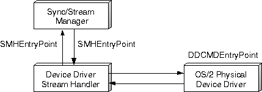

A device driver stream handler is used as a source handler at the Ring 0 level. It interfaces with the Sync/Stream Manager to get or return stream data buffers. The stream handler also interfaces with the hardware's physical device driver (PDD) to give or receive data buffer pointers. The purpose of the stream handler is to alleviate the media driver from the task of sending a data stream to the PDD. Instead, the media driver issues function calls to the SSM to initiate a stream. In turn, the SSM requests the stream handlers to regulate the proper stream flow without intervention from the application.
Device driver stream handlers include two main entry points - SMHEntryPoint and DDCMDEntryPoint.